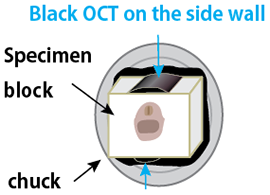

CoMBI-C (Cryostat/クリオスタット型、2017-2020)
Overview/概要
- Initial setup includes attaching black sheet (low-reflection sheet) on the handle, determining sensor positions, and setting up the camera for CoMBI.
- Prepare the specimen block.
- Set up the camera and sensor, etc., and align the anglea of the camera and block. Slice the block little by little, and align the angle and position of the camera and block, carefully.
- When the specimen is about to be exposed, set the exposure of the camera and start serial blockface imaging.
- Collect sections as required.
- 初期設定として、ハンドルに黒シール添付、センサー位置決定、カメラのCoMBI用設定
- ブロックを準備する
- カメラとセンサー等を設置し、カメラの角度とブロックの角度をあわせる。面出しを少しずつ進めて、カメラやブロックの角度と位置を合わせていく。
- 試料が露出しそうなところで、カメラの露出設定、ブロック面の連続撮影を開始する。
- 切片は、必要な場合に、必要な分だけ、採取する。
Initial setup/初期設定
- Attach the controller and sensor. They are easy to remove as they are attached using magnets.
- Check the location of the power supply and cable length for the controller (12V), PC (optional), and camera (in case of AC adapter).
- Attach a piece of black sheet (low-reflection sheet) on the handle, and adjust the position of the sensor.
- 1 cm square black sticker. If the microtome is one of common facilities, please negotiate and announce that the black sticker remains attached.
- For manual handles, the block is imaged at the top position, where the block almost stoping. In case of CM3050, the imaging position is 1-2 cm past the lock position. So you can use the lock function as well.
- For motorized hanldes, the sensor detects the position where the block is a little lower. The position must be within the sectioning window of the automatic operation (CM3050).
- The power is turned on, the sensor is ON, and rotate the handle. An LED indicates the position of the black sticker, i.e., the timing of the shutter release.
- Adjust the position of the black seal, the height of the sensor, and the position of the sensor.
- Set the camera for CoMBI.
- Set the time (main menu)
- Set the image format to RAW (recommended) (main menu)
- Allow release shooting (PC app?)
- Allow release without lens (main menu)
- Exposure mode is set to Manual (main unit button).
- Focus mode is also manual (slide switch on the camera body or lens).
- Exposure settings are made for each experiment. Typically, shutter speed 1/500-1/125, ISO 100-800, aperture one stop down from full-open.
- Connect the camera to the CoMBI controller.
- Connect the camera to the CoMBI controller. Turn
SensorandHoldON, and operate the handle. Check if the shutter is released when the sensor detect the black sticker. - Two LED illuminate diagonally. High (12V) or Low (9V).
- Brushes keep the block clean. Highly recommend to use the anti-roll plate, which is effectively clean the block, more than brushes.
- Connect the camera to the CoMBI controller. Turn
- (optional) Connect the camera to your computer. See "Tethering".
- File transfer settings (app): save the file to the PC and, also to the SD card, if possible.
- CoMBI用のコントローラとセンサーをつける。磁石で設置するので、取り外しも簡単です。
- コンセントの位置を確認します。コントローラ（12V）、パソコン（オプション）、カメラ（ACアダプタの場合）に供給できる環境を整えます。
- ハンドルに黒シールを貼り、センサーの位置を調整する。
- 1cm角の黒シールです。共通機器の場合、貼りっぱなしできるように交渉・告知をお願いします。クリオスタット作業の邪魔にはならないので大丈夫だと思っています。
- 手動ハンドルの場合、ブロックが最も上にきたところ。単振動なので、上端で撮影したほうが、ズレが少ない。（当方のCM3050では、ロックレバーがロック位置から1-2センチ過ぎたところでした。ですので、ロック機能もつかえます。）
- 電動ハンドルの場合、センサーが検知する位置は、ブロックがすこし下ったところ。自動運転時のウィンドウ内に収まること。
- 電源をいれて、
Sensor ON。ハンドルを回すと、LEDが黒シールの位置、すなわち、シャッターのタイミングを知らせてくれます。 - 黒シールの位置調整（導入時のみ）や、センサーの高さ調整（導入時のみ）、センサーの位置調整（実験ごと、磁石なのでずらせる）を行う。
- カメラをCoMBI用に設定する
- 時刻合わせ（本体メニュー）
- 画像形式はRAW（推奨）（本体メニュー）
- レリーズ撮影の許可（パソコン側？）
- レンズなしレリーズを、許可（本体メニュー）
- 露出モードは、Manual。（本体ボタン）
- フォーカスモードも、Manual。（本体かレンズにスライドスイッチ）
- 露出設定は、実験ごとに行います。大まかには、シャッター速度1/500-1/125、ISO100-800, 絞りは開放から1つ絞ったところを使います。
- カメラとCoMBIコントローラをつなげてみます。
Sensor ON、Focus Holdで、ハンドルを回し、センサーが黒シールを感知したときに、シャッターがきれるか確認します。
- その他のCoMBI部品も付けてみて、動作確認します。
- LED 斜めから2灯。12Vなら強、9Vなら弱
- ブラシ、ブロックをキレイに保つ。ブラシよりも、クリオスタット付属のアンチロールプレートのほうが効果的に削りカスを除けます。
- カメラとパソコンをつなげてみます（オプション）。くわしくは、 "Tethering"。
- ファイル転送の設定（アプリ）で、PC保存とできればSDカードにも保存をします。
Make Frozen block/凍結ブロック
Set frozen block/凍結ブロックを設置する
- After freezing with nitrogen, etc., leave in the cryostat chamber for about 10 minutes to stabilize the temperature.
- When adhering a frozen block to a chuck, a white block would be adhered with a black OCT. Conversely, a black block is bonded with a white OCT (figure below). The blockface clearly shows the contour of the block. The contour of the block is useful for successful registration.
-
Slicing (1) a little bit to eliminate the unevenness of the top surface of the block.

- 窒素などで凍結させた後、クリオスタット庫内に約10分放置し、温度を安定させる
- 凍結ブロックをチャックに接着するとき、白ブロックは、黒OCTで接着する。反対に、黒ブロックなら、白OCTで接着します。下図の左（ブロック面像で、ブロック周囲の形状が、はっきりします。明瞭かつ同一形状のブロック周囲像は、のちのズレ補正を成功させるために有効です。）
- 面出し1回目は、かるく行う。ブロック上面の凹凸が無くなる程度でよい。
Place the camera/カメラを設置する
The long axis of the camera lens should be perpendicular to the cutting face and horizontal to the axis of block. I place the camera carefully. Even though I experienced many time, sometimes it takes me about an hour.
カメラレンズの長軸はブロック面に垂直であること、さらに、カメラレンズの長軸とブロックの長軸が水平になるように調整します。まいど、丁寧に行います。すぐに設置できることが多いですが、まれに1時間くらいかけて慎重に設置します。
- Place the camera (A block is not needed yet. If there is a block, put it at the bottom position).
- A controller and sensor are also installed, and the camera is connected to the controller. (The LEDs are not needed yet. LEDs will be installed just before imaging.)
-
Adjust the vertical angle of the camera
- The block and LEDs are still not needed.
- The block surface and the camera's sensor should be parallel; in the case of the CM3050, the long axis of the camera and lens is at a 35° lowering angle. If the head has an angle scale, it can be easily aligned. If the head does not have an angle scale, use the camera guide and the plate (colored in yellow in the figure). The plate is parallel to the block surface, so place a guide perpendicular to this surface and align the long axis of the lens with the guide.

-
Adjust camera left/right angle (block not yet required)
- First, visually check. The block and LEDs are still not needed.
- Next, refer to knife. Check if focusing can be done in both right/left side of the image.
- Move the block to the imaging position and adjust the camera position strictly using the blockface
- From now, adjust with the blockface.
- Adjusting the camera position. You can move the camera position parallel with tripod, use the elevator on the tripod, or use the slider. The block comes to the center of the imaging area. (Final adjustments are made after the block is adjusted.)
- Angle of the block. Adjust so that the long axis of the block and the long axis of the lens are aligned.
- Since the alignment is corrected with the wall around the block, the block should be made as rectangular or straight cylinders.
- Repeat the focusing to the top surface of the block, and to the bottom of the block. Once the axes are aligned, the four sides of the bottom will be visible.

- Slicing (2) till the blockface is revealed thourouly.
- Final check of camera position
- When the block is in the imaging position, make sure that the block is in the center of the view and that all four sides of the blocksface are in focus.
-
Paint colored OCT on the sides of the block.
- If the block is white, apply black OCT (left in the figure below). If the block is black, apply white OCT to the sides (right in the figure below).
- Painting on the top side is essential. Top side tend to be covered with debris without painting. Sometimes I paint on the top and another side just to be safe, and sometimes I paint on all four sides. This painting is done to ensure the success of later image registration.


-
After painting, wait for more than 5 min till the temperature stable.
- Slicing (3) till you see through the specimen (not expose the specimen).
- カメラを置いてみる（ブロックは不要、ブロックがあれば下端にいてもらうのでよい。）
- コントローラとセンサーも設置して、カメラをコントローラに接続する。（LEDはまだ要らない。各種調整で邪魔なので、撮影直前に設置します）
-
カメラの上下の角度を調整する（ブロックまだ不要）
- まずは、ブロックが見えてなくてもよいので、ブロックは下端位置でよい。LEDもなくてもよい（カメラの最終調整は、ブロックを設置・調整してからです）
- ブロック面とカメラのセンサーが並行になるように設置します。CM3050の場合、カメラとレンズの長軸は下げ角35度です。雲台に角度目盛りがあれば、簡単に合わせられます。雲台に目盛りがない場合、クリオスタット内の黄色く塗った面を利用します（下図の左）。黄色い面はブロック面と並行ですので、この面に垂直にガイド（下図中央の自作ガイドか、下図右の長い定規）をおいて、レンズの長軸を合わせます。
-
カメラの左右の角度調整（ブロックまだ不要）
- まずは目視で
- つぎに、刃にフォーカスをあわせて調整します。画面の左右端で刃に合っているか。
- 撮影位置にブロックを移動させ、カメラを厳密に設置する（これ以降、ブロック面であわせる）
- カメラ位置の調整。カメラの位置を三脚ごと平行移動したり、三脚のエレベータを使ったり、スライダーを使ったり。画面の真ん中にブロックがくる。（最終調整は、ブロックを調整してからです）
- ブロックの角度。ブロックの長軸と、レンズの長軸が一直線になるよう、調節する。
- ブロック周囲壁でズレ補正するため、もし壁が斜めだと、ズレ補正の結果、試料形態が斜めに補正されてしまいます。
- フォーカスを、ブロックの上面に合わせる、底面に合わせるを繰り返す。軸が合えば、底面の4辺が見えるようになります。
- 面出し、2回目。ブロック面の全面が削れるまで。
- カメラ位置の最終確認
- ブロックが撮影位置にあるとき、画面の真ん中にくること、ブロック周囲4辺がどこでも合うことを確認する。
-
ブロック側面に着色OCTを塗る。白ブロックなら黒OCTを側面に塗る（下図の左）。黒OCTなら白OCTを側面に（下図の右）。
- 場所は、上面は必須。ブロック周囲のうち、上辺はゴミで隠れやすいが、塗ることで常に白黒ハッキリした線が見えることになる。上面1箇所でもよいが、念のため上面と側面ひとつ塗るときや、4面に塗るときもあります。この作業は、後のズレ補正を確実に成功へ導くためです。
-
塗ると温度が上がるのでしばらく待ちます。5分程度。
- 面出し、3回目。こんどは、試料が見え始める寸前まで。
Setial blockface imaging/ブロック面の連続撮影
- Place LED and turn ON.
- Check focus again. All four side is in fucus.
- Camera settings. See "Camera settings"
- Capture a scale. Use levers
Focus HoldandRelease. - Check if the SD card have enough space.
- Adjust the position of anti-roll plate at a little further than blade. Sections slip between the plate and blade.
- The anti-roll plate can keep the blockface clean.
- Focus Hold ON、Sensor ON、(Brush ON)。
- Let's start imaging.
- LED照明を設置し、ON。
- フォーカスを再確認する。4辺でフォーカスが合うこと。
- カメラの露出設定。See "Camera settings"
- スケールを撮影する。手動。Focus Hold、Release レバーを使う。
- SDカードに十分な容量があるか、前の実験の画像がたまっていないか、確認する。
- アンチロールプレートの位置調整。刃よりちょっと飛び出たところ。切片がプレートと刃の隙間にはいること。
- これによって、切りくずがブロック面にかぶらないようになる。効果絶大。
- いよいよ、連続撮影。Focus Hold ON、Sensor ON、(Brush ON)。
- 切削開始
-
Manual handle operation Image the blockface when the block is at the top. In the CoMBI-C (2018-2020), the sensor rests for 2 seconds after taking a picture to prevent malfunction. CoMBI-U(2021-current) has no limitation and can take pictures faster than 1 second/picture. The disadvantage of manual operation is the labor, but there are some advantages that exceed this disadvantage; Serial imaging is fast (about 25 minutes for 600 images), if you passed away from the imaging position without imaging, you can go back and image in reverse rotation. Slicing and pausing are easy, and settings can be changed during operations such as changing the cutting thickness only when acquiring sections. In addition, if you perform serial imaging very carefully, you may not need to register later.
手動ハンドル設定（試料が上端に来たときに撮影する設定） せっせと回します。CoMBI-C(2017-2020)の場合、2-3秒/枚で撮影出来ます。撮影後に誤作動を防止するため、撮影後にセンサーは2秒間休むようになっています。よって、2秒以内では撮影出来ません。CoMBI-U(2021)の場合、制限はなく、速く撮影出来ます。ただし1秒/枚より速くなると、ズレがでるようになります。手動のデメリットは、労力ですが、それを超えるメリットがあります。連続撮影が早い（600枚で、約25分）、行きすぎたら逆回転で戻って撮影しなおせる、切削や一時停止の操作が簡単、切片取得時だけ切削厚をかえるなどの設定変更もできる、です。さらに、丁寧な作業で失敗なく連続撮影すると、のちのズレ補正が不要になるときもあります。
-
Motorized handle operation Image the blockface when the block is moving in the sectioning window. Sectioning window is generally set for section slowly, while CoMBI utilize sectioning window for imaging slowly moving block.For CoMBI, start and end of the window are set above the blade. Speed in the sectioning window is set at 25%. Interval of serial imaging is 6 sec/image at fastest, 6-10 sec/image in most cases. Motorization reduce labor, but imaging duration become longer. In addition, since the block is moving when it is imaged, image registration is always required.
電動ハンドル設定（動いている途中で撮影する設定） 切削ウィンドウの設定が必要です。切削ウィンドウは、通常切削時にゆっくり試料を動かす機能ですが、CoMBIでは、撮影位置でゆっくり動かします。通常利用の場合、ウィンドウ開始点＞切削＞ウィンドウ終了点、となりますが、CoMBIの場合、ウィンドウ開始点>撮影ポイント＞ウィンドウ終了点＞切削、という順になります。つまり、ウィンドウが刃より上方になります。ウィンドウ内でのスピードは
25%にセットします。最速6秒/枚で撮影出来ますが、余りシビアにウィンドウをセットすると、行き過ぎたりしますので、6-10秒/枚で撮影します。オートメーションは作業者にとって労力が減るというメリットがありますが、総撮影時間が長くなるデメリットがあります。600枚で1時間〜1時間40分。また、動いている標本を撮影するので、のちのズレ補正が必須となります。 -
Transfer images via USB Transfer one image takes about 2 sec via USB3 (Sony a7RIII + Imaging Edge). Use USB3 cable with the transfer speed faster than 5Gb/sec. Cables with transfer speed of 40Gb/sec is available, but no need to use for CoMBI-C (2018-2020).
USBで転送しながら撮影する場合（Sony a7RIII + Imaging Edge)、USB3による転送は2秒/枚です。はやり、最速2-3秒に1枚が安全なところです。なお、ケーブルはUSB3（5Gb/sec）以上の転送速度規格のものを使ってください。(40Gb/secとかまでは必要ではありません。)
Camera settings/カメラの設定
See "Camera settings" for detailed information about exposure time, iris, and others.
露出や絞りなど、カメラの設定については、Camera Settingsをご覧ください。
Collecting sections/切片採取
Sections can be collected while serial imaging is paused. Manual operation makes it easy to pause and collect sections. For motorized operation by Leica CM3050, select a mode "slice one time" when collecting sections.
連続撮影を一時停止し、その間に切片を採取できます。Leica CM3050電動モデルを使っている場合は、ボタン「1回切りモード」を選んで、一枚だけ採取します。もしくは手動で切削して切片を採取します。
- Pause serial imaging and clean anti-roll plate, knife folder, and block.
- Chill anti-roll plate with liquid nitrogen. When the anti-roll plate is cooled, the sections remain straight and slide in. Put liquid nitrogen in a plastic cup and hold it over the glass plate. Caution: Pressing with a metal cup will cause the glass to break! Use plastic cup!
- Image the blockface once.
- Slice once. Manual sectioning is more stable than motorized. Pause when the block goes down.
- Collect section on the slide glass.
- Even if there is a small amount of distortion, correlating it with the 3D data allows us to assert during section analysis, "It's distorted!" This is the advantage of CoMBI. You can distinguish between artifact distortion and morphological changes caused by experiment setting.
- Hard specimens hurt the blade during serial imaging, making it difficult to collect sections.I embedded specimen so that the area I wanted to section (larval head) would appear first, and so that the hard tissue (larval mandible) would appear later.
- Sections can be taken as usual with a typical thickness of 8-10µm and temperature of -20°C. Imaging blockface can be conducted with various slicing thickness, however, for collecting seccion, thickness of sections is restricted. My thinnest record in frozen sections was 4µm at -23°C, which was quite difficult. I have also used 20µm and 40µm for large specimens at -15 °C.
- Record the file name of the blockface image on the glass slide and also in the experimental notebook.
- If your camera is connected to a PC: Sony Imaging Edge allows you to see the file names in the folder to which the images will be transferred. ImageCapture (Mac), can check the file names in the camera.
- If the camera is used alone: The time is recorded in seconds. The time is later matched with the time when the blockface iamge file was generated. The time in the camera must be adjusted before experiment.
- Restart blockface imaging.
- 掃除のために、連続撮影を停止。アンチロールプレートをキレイにする
- アンチロールプレートを冷やすと、切片はまっすぐのまま入り込みやすい。液体窒素をプラスティックカップに入れて、ガラスの上にかざす。注意：金属カップで圧着するとガラスが割れます!プラスティックなら大丈夫です
- ブロック面を撮影、一回。電動でもよいけれど、手動のほうが切片が安定する。
- 切削、一回。試料ブロックが下へいったところで停止。
-
切片採取。ガラススライドへ。
- 少々の歪みがあっても、3Dデータと相関させることで、切片解析のときに「歪んでます！」と断言できるのが、CoMBIの良いところです。アーティファクトの歪みと、実験条件による形態変化を区別できます。
- 刃こぼれしやすい標本だと、連続撮影している間に、刃が痛んで切片を採りづらくなります。なんとか切片を採りたいときは、切片にしたい領域が先に現れるように包埋したり、硬い組織（幼虫の大顎）があとで現れるように包埋したりしました。
- 一般的な厚さ8-10µmと温度-20度であれば、普段通り切片を採れます。高精細3Dを目指している場合、切削厚が薄くなり、切片採取は難しくなります。私の凍結切片における最薄記録は4µm、-23度で、かなり難しかったです。大型の標本の場合、20µmや40µmも使ったことがあります。-15度くらいが良いところです。
-
ブロック面像のファイル名を、スライドガラスと実験ノートに記録する。
- カメラ単独使用の場合：時刻を秒単位まで記録する。のちにブロック面像ファイルの生成時刻と照合する。カメラ内の時計と手元の時計あわせを済ませておくこと。
- カメラをPCでつなげている場合：Sony Imaging Edgeなら、画像の転送先フォルダ内で、ファイル名を確認できる。Nikon & Mac & 意地でも無料の場合、Mac付属のImageCaptureでカメラ内のファイル名を確認できる。
- ブロック面撮影を再開する
Cleanup after use/後片付け
- LED lamps and brush motors do not like moisture.
- When these are moved out of the cryostat chamber, they are quickly packed in a plastic bag. Let them warm up to room temperature while preventing condensation.
- If you keep the LEDs on, it is easy to raise the temperature, but please be careful not to forget to turn them off.
- Or, since the cryostat door glass is warm, you can leave them on it for a while.
- Debris should be picked up as much as possible and properly disposed in accordance with the sample handling rules and the institution's disposal rules.
- The inside of the cryostat chamber can be cleaned with a tissue with 70% EtOH.
- CoMBI produces a lot of debris, but the chamber is beautifully restored to its original state.
- Safety comes first, and the blade must always be removed during cleaning.
- For cryostat maintenance, EtOH is used by wiping, not spraying.
- For common equipment, we are careful about cleanliness, but wiping with ethanol will clean it up.
- The data is recommanded to be saved both in the SD card and in the PC just after imaging.
- Keep the data on the SD card until the RAW-JPEG conversion is successfully completed. Transferred data is very rarely file corrupted. After the RAW-JPEG conversion is finished, delete the data on the SD card to free disk space for the next experiment.
- Unplug and put away the CoMBI devices. (The LED lamps will inevitably be turned off at this time.)
- LEDランプとブラシのモータは、湿気を嫌います。
- クリオスタット庫外に出すときは、さっとビニール袋に入れます。結露を防止しながら、室温に戻します。
- LEDを点灯しておけば、温度が上がりやすいですが、くれぐれも消し忘れにはご注意ください。
- もしくは、クリオスタット扉ガラスは暖かいので、その上にしばらく置いておくのでもいいでしょう。
- 削りカスは、できるだけ拾い集めて、試料の扱いルールや機関の廃棄ルールに従って、適切に処理します。
- クリオスタット庫内は、70%EtOHをティッシュにつけて、拭き掃除できます。
- CoMBIでは多くの削りカスがでますが、みごとにきれいに元通りになります。
- 約束ごととして、安全第一で、かならず刃をはずすこと。
- 機器保全のため、EtOHは噴霧ではなく、清拭で使用します。
- 共通機器の場合は汚れに気を遣いますが、上記でキレイになります。
- データは、カメラ本体のSDカードと、転送先のPCにある状態です（推奨）。
- SDカードのデータは、RAW-JPEG変換が正常に終了するまで、保っておきます。転送データはごくまれにファイルが破損しています。RAW-JPEG変換がおわったら、SDカードのデータを削除します。次の実験のために、空き容量を確保します。
- コンセントを抜いて、CoMBI装置を片付けます。（このとき、必然的にLEDランプはOFFになるでしょう。）
Tips/ヒント
Camera and imaing/カメラと連続撮影
-
Connecting a computer to the camera is useful (but not required) Images can be displayed on a large monitor, making it easy to check focus and review images. Some Sony and Nikon models can be USB powered while shooting. No need to worry about remaining battery power, and no need for a separate accessory for power supply.
パソコンをカメラにつなげると便利です（必須ではない） 画像を大きなモニタで表示できて、フォーカスの確認、画像の確認をしやすい。ソニーやニコンの一部機種では、撮影中にUSB給電できる。バッテリ残量の心配がなくなる、給電用別売りアクセサリが不要になる。 -
Sensor is wrong? Shutter release in error (CoMBI-C 2018-2020, only for the infrared reflective sensor) Clean the handle. Clean with a neutral detergent. If used often, it will get dirty with hand dirt. Do not use: alcohol solution. The paint on the cryostat will be removed. Distance between sensor and handle surface may not be adequate. Is it too close? Please contact us. We will send you a spacer for adjustment. In addition, I can send you a sensor value checker (self-made). Before Corona, I used to do on-site repair, but now I can correct the issues by online consultation and sending spacers and checkers. The sensor documentation says that 6 mm is the most sensitive, but in fact it works over a wide range, and CoMBI is running at about 10 mm.
センサーがおかしい？やたらとシャッターを切る（CoMBI-C 2018-2020、赤外線反射センサー) ハンドルを掃除する。中性洗剤で汚れを落とす。よく使用していると手垢で汚れていきます。禁忌：アルコール液は使わない。クリオスタットの塗装がハゲます。センサーとハンドル面の距離が適切でないかもしれません。近すぎ？ 連絡ください。調整用スペーサを送ります。その他、センサー値チェッカー（自作）も送れます。コロナ前には、出張修理をしていましたが、いまはオンライン相談とスペーサ、チェッカーを送ることで簡単に修正できます。センサーの説明書では6 mmが最も鋭敏とありますが、実際は幅広く作動し、CoMBIは、10 mm位で運転しています。 -
Hey? The shutter isn't released. It was working fine just before. Is the SD card full? Images from previous experiments may be left. Are you using a mount converter with electronic contacts? In rare cases, the shutter will not release with electronic contacts. For example, I experienced this with a Sony camera + Commlite adapter + Sigma NikonF lenses. Use a simple manual adapter (Reyqual or Kenko), which should work fine and stable.
あれ？シャッター切ってない。さっきまで順調だったのに。 SDカードがいっぱいになっていませんか？前の実験の画像がたまっていたりして。データ管理はどうか丁寧に、自戒を込めて。もしかして、電子接点付きマウントコンバータを使っていますか？電子接点付きでは、まれに、シャッターが切れません。例えば、Sonyカメラ＋Commliteアダプタ＋SigmaのNikonFレンズ、で経験しました。シンプルなアダプタ（ReyqualやKenko）を使ってください。問題なく安定稼働します。 -
CoMBI controller doesn't work? I have experienced: break in the release cable (replaced with a new one), break in the lever switch (It was surprising!).
CoMBIコントローラが動かない？ 経験したことがあるのは、リリースケーブルの断線（新しくした）、レバースイッチ内の断線（これにはビックリした）。 -
Can't operate the camera? Focus Hold may be on, as the various buttons and menus on the camera body cannot be manipulated while Focus Hold is on. This is something I am thinking of revising (2021). This could not be revised (2022) because I checked with Nikon, Canon, and Sony and found that Canon cameras are unstable unless Focus Hold is kept ON.
カメラが操作不能？ Focus Holdが入ったままかもしれません。Focus Hold中は、カメラ本体の各種ボタンやMenuがいじれない仕様です。これは、改訂しようと考え中です（2021年）。改訂はできませんでした（2022年）。Nikon, Canon, Sonyで確認したところ、Canon機はFocus Holdを持続させておく仕様でないと、不安定になったため。 -
Image Transfer Error Rarely an image transfer error will occur; for Nikon, the default setting is to leave the images on the SD card; for Sony, Sony Imaging Edge can manage the PC transfer setting to leave the images on the SD card.
画像転送ミス まれに画像転送ミスが起こります。Nikonの場合、SDカードに残っているのがデフォルトの設定です。Sonyの場合、かつ、Sony Imaging Edgeを使用している場合、できれば、PC転送の設定を、SDカードにも残す、にしてください。 -
Images are blurred There are many causes. The camera was not set up properly. The camera was misadjusted from the beginning. Something hit the lens during the process. Operator leaned on the cryostat during the process, or put their hand on the cryostat. The floor of the laboratory is unstable. The tripod was not sturdy and unstable.
写真がボケている 様々な要因があります。カメラの設置があまかった。最初から調整ミス。途中レンズにぶつかった、途中クリオスタットに寄りかかった、手をついた。実験室の床が不安定。三脚が丈夫ではなく不安定なのを使ってしまっている。 -
** Camera no longer remembers the date and time. The date is reset when the power is turned off, which is a symptom that the internal battery in the camera has reached the end of life. You can still take pictures without internal battery. Consider to send the camera for repair.
カメラが日時を記憶しなくなった。** 電源をOFFにすると、日付がリセットされてしまうという症状で、カメラ内の蓄電池が寿命です。そのままでも撮影はできます。実験のタイミングを考慮して、修理にだすのでいいでしょう。 -
Life of shutter The Nikon D810 has a shutter life of 200,000 times according to a catalog. I have been using D810 since 2014 and have shooted more than 300,000 times in four years. The shutter has not had any obvious issues, but I had replaced it when the internal battery was repaired as described above. The repair cost was 20,000 yen including both the internal battery and shutter replacement. The Sony a7RIII has a shutter life of 500,000 times.
シャッターの耐用回数 Nikon D810は、20万回がカタログ値です。2014年から使用して、4年間で30万回を超えました。シャッターに明確な不具合が出ていたわけではありませんが、上記の内蔵電池の修理の時に、交換してもらいました。修理料金は、内蔵電池交換とシャッター交換をあわせて、2万円台でした。Sony a7RIIIの耐用回数は、50万回です。2017年からCoMBIにつかっていて、快調です。
Others/その他
-
LED lighting is diagonal and from two direction Compared to a single frontal lighting, more shade and more contrast can be seen in the blockface.
LED照明は、斜めから二灯にしている 正面一投と比較すると、斜めのほうがブロック面像において、陰影ができやすく、構造物を認識しやすくなる。 -
Lighting is dim? LEDs also get old. If you feel that the LEDs are getting dim, even with the human eye, it is time to replace them. Please contact us or you can buy them at Akizuki Denshi. The shortest life span was about one year. To avoid moisture, place them in a plastic bag or keep turning ON till it warmed up sufficiently.
照明が暗い？ LEDもへたります。なんとなく暗くなってきたなと、ヒトの目でも感じるようになったら、交換です。連絡をいただくか、秋月電子で買えます。短命なときで1年くらいです。使用後は、湿気を吸わないように、ONのままクリオスタット庫外へ出し、十分暖まってから、OFFにします。 -
Brushes keep blockface clean Debris may cover blockface, but can be reduced with brushes.
ブラシでブロック面をきれいに保つ 切りくずが、ブロック面をおおってしまうことがあるが、ブラシで低減できる。 -
Anti-roll plate is more effective in removing debris. Use both a brush and the anti-roll plate to successfully imaging.
アンチロールプレートのほうが切りくず除去の効果は高い。 アンチロールプレートと共にブラシも使い、ブロック面撮影を成功させる。 -
The brush doesn't move? Servo motors are the most breakable part. But don't worry, the brush is effective even if they don't move. The new 2022 CoMBI-U type has fixed brushes.
ブラシがうごかない？ サーボモータは、もっともよく壊れるところです。でも心配ありません。ブラシは動かなくても効果的です。キュッキュと動かしたのは、半分ウケねらいでして、すみません。2022年の新しいCoMBI-Uタイプでは、ブラシは固定型になりました。 -
Debris often cover the blockface Use anti-roll plate. Eliminate the roughness of the block side.
切りくずがよくブロック面にかぶる アンチロールプレートが効果絶大です。または、ブロック側面の凸凹をなくします。 -
Debris tend to stick around the block Block temperature may be too high. Lower the temperature. Adjust temperature within a range of 5 degrees. Or dim the LED lights. Usually the lights are powered by 12V, but they will dim by 9V. To get 9V, use a 2020 CoMBI controller or get a additional power supply (switching AC adapter, 9V 1A, about 700 JPY). If you are using black OCT, the temperature seems to rise easily due to the lighting.
切りくずがブロック周辺につきやすい ブロックの温度が高いのかも知れません。温度を下げます。温度を幅5度以内で調整します。もしくはLED照明を暗くします。通常は12Vで点灯させていますが、9Vで暗めになります。9Vにするには、2020年版CoMBIコントローラを使用するか、電源（スイッチングACアダプタ、9V、1A程度、700円）を別に用意するかします。黒OCTを使っている場合、照明のせいで温度が上がりやすいようです。 -
Filamentous debris tends to appear around the tissue (not block) Filamentous debris in the boundary between the tissue and the OCT, not around the block. In this case, lower the temperature within 5 degrees.
試料周囲に糸状のゴミが出やすい 試料周囲とは、ブロック周囲ではなく、試料とOCTの境界部のことです。この場合、温度をさげます。幅5度以内で調整。 -
Which temperature is recommended? Basically, you can use the thickness and temperature that you always use. Increase the temperature for thicker sections and decrease the temperature for thinner sections; standard 8-10 µm sections at -20°C, thicker 20-40 µm sections at -15°C, thinner 5 µm sections at -22°C. The temperature varies depending on the tissue type; refer to the Leica cryostat manual or the textbook "Mastering Cell and Tissue Staining," published by Yodosha, Inc.
温度はどれがいいか 基本的にいつもつかっている厚さと温度で撮影できます。厚めなら温度をあげ、薄めなら温度を下げます。具体的には、標準の8-10 µm切片なら-20度。厚め20-40 µmなら-15度。薄め5 µmなら、-22度。試料によっても異なります。Leicaクリオスタットの説明書や、書籍（細胞・組織染色の達人、羊土社）を参考に。 -
Cryostat chamber gets dirty... In the case of common equipment, we are more concerned about this. But don't worry. After using the cryostat, you can clean the chamber with a tissue with 70% EtOH. It will be restored to its former state. Safety first! Remove the blade while cleaning. For cryostat maintenance, EtOH should be used for wiping, NOT spraying.
クリオスタット庫内をよごしてしまう、、、 クリオスタットの使用後、70%EtOHをティッシュにつけて、拭き掃除できます。みごとにきれいに元通りになります。約束ごととして、安全第一で、かならず刃をはずすこと。機器保全のため、EtOHは噴霧ではなく、清拭で使用します。CoMBIでは多くの削りカスがでます。クリオスタットの汚れが気になります。とくに共通機器の場合はなおさら気がかりですが、上記でキレイになります。